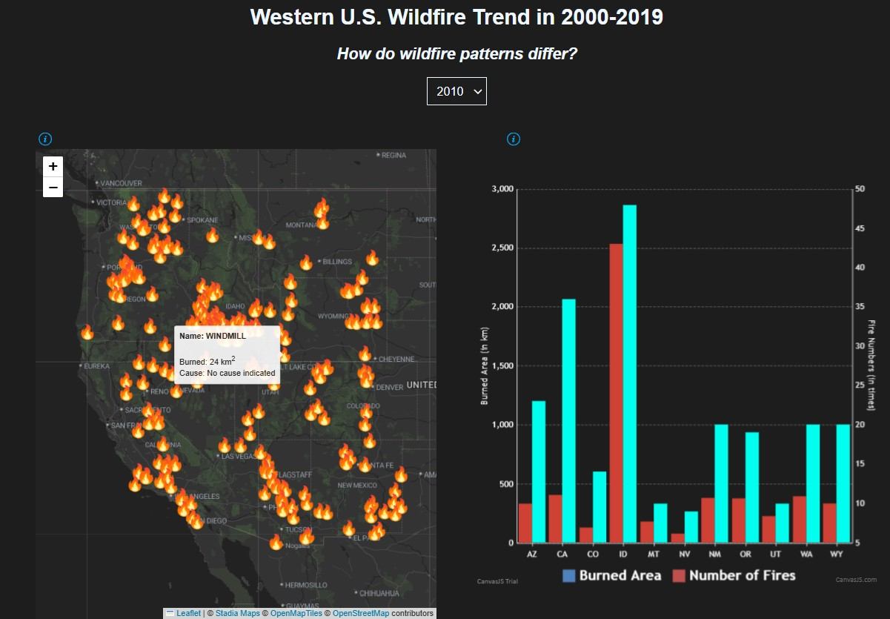
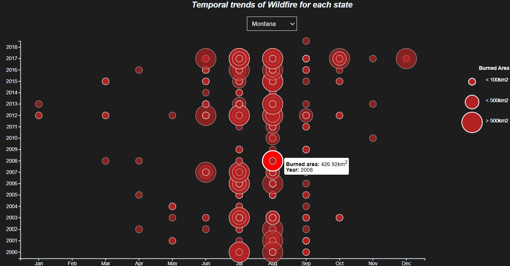
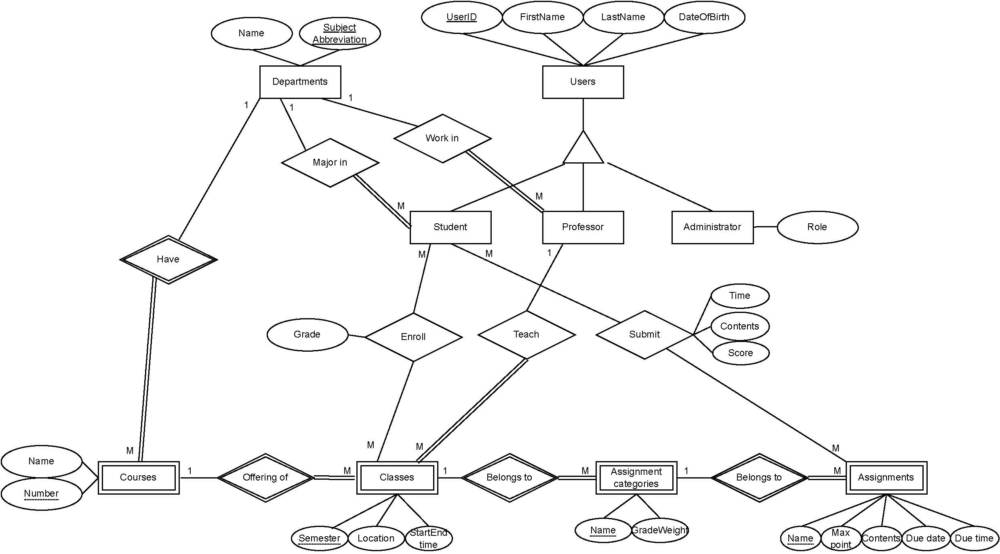

02 / Capstone project
Interactive web-based mapping for wildfire in the western United States
Considering the enormous threat that wildfires pose to U.S. socioeconomics and public health,
we visualize wildfire locations in western U.S. from 2000 to 2019, figuring out the occurrence time and
the relatively burned area position of the wildfire, and summarizing the frequency of wildfires and the burned area across
for each U.S. western state, to reveal inherent patterns of wildfire occurrence that is crucial for modeling future events.
- LanguageJavaScript, HTML, CSS


Project screencast link: https://youtu.be/6z4KwQSF7qQ?si=ZIO0vTNfjep2bET2
Primary Tasks
Designed and deployed an interactive GIS web mapping application enabling real-time toggling across multi-year historical wildfire layers.
Converted raw spatial point observations into dynamic polygon estimations of burned perimeters with custom interactive tooltips (probable ignition causes and spatial extents).
Constructed interactive scatter plots and time-series visualizations to analyze intra-annual monthly burning cycles and multi-year trajectory trends in wildfire frequency.
Key Findings
Spatial distribution of wildfires is uneven. Over the period from 2000 to 2018, Idaho and California
consistently accounted for a large proportion of wildfire incidents in the U.S., underscoring thier vulnerability
to such disasters. In terms of the burned area, California suffers the most large-scale burned wildfire.
These trends demonstrate the need for targeted wildfire prediction systems and disaster management tailored to the
specific geographic and climatic conditions of these states.
Optimizing public transit networks based on accessibility to urban green space: a case study in Salt Lake City, Utah
While urban green spaces provide vital public health benefits, their ecological and economic distributions are frequently unequal. New or restored green amenities often trigger localized property value appreciation, risking the displacement of low-income and vulnerable groups. Because transit-dependent populations rely heavily on public transportation, bridging mobility gaps to urban parks is essential for achieving equitable greening without compounding social displacement. Implemeting the greedy algorithm, I optimized existing bus routes in SLC and compared the existing vs. updated routes based on closeness centrality, betweenness centrality, and modularity score.
- LanguageMATLAB, Python
Primary Tasks
Building upon the approach designed by Chen and Chang (2015), I developed a greedy routing algorithm to reconfigure
selected bus transit corridors for equitalbe park accessibility while preserving fixed original-destination nodes.
Computed Delta score--that is, composite index of closeness centrality, betweenness centrality, and graph modularity--to
maximize structural efficienty and evaluate network topology. Integrated spatial accessibility rules into the algorithm; specifically,
a bus node needs to be within a walkable distance (~402 meter) to the nearest park and deployed an iterative greedy selection untill the final node
is converged to the destination node.

Key Findings
Closeness centrality measures distances from one vertex to other vertices, indicating how a vertex is centered compared to
other vertices. If a node adjacent to parks has a high closeness centrality, the path to access green space will likely be easier
within a network. The average closeness centrality of the updated bus network was a 37.5% higher than the original one.
Meanwhile, betweenness centrality indicates which vertix has a higher influence on the flow passing between other vertices. If a bus node
adjacent to parks has a higher betweenness score, this vertex is likely to contribute to the access to green space by connecting other bus nodes.
Average betweenness centrality was slightly higher for the original network.
Modularity score mainly relies on the distribution of access points (or nodes) that are located within a walkable distance from a park.
The result shows that the updated bus network has a 10% higher modularity score than the original one.
This reveals that our bus network structure provides better accessibility and connectivity to green space than the original one.
Despite a few limitations (e.g., external factors that are crucial for building bus networks), this project suggests that
public transit networks can be one of ways to promote equitable urban greening initiatives.
Designing learning management system (LMS) like Canvas based on the Model-Viewer-Controller architecture
This capstone project involved architecting the server-side infrastructure and relational database for a Canvas-style Learning Management System (LMS). Operating within a Model-View-Controller (MVC) design pattern, the project focused on the Model and Controller layers, decoupling backend logic and database operations from the user interface. Using C# in Visual Studio Code and MySQL, the system dynamically translates user requests into optimized, secure database queries to manage complex academic workflows (such as user enrollment, course assignments, submissions, and grade tracking).
- LanguageSQL, C#, JavaScript
Designed relational database schema in MySQL to satisfy requirements (e.g., primary-foreing key relationships, constraint enforcement, index optimizations). Developed backend logics of a web-browser within an MVC architecture to programmatically execute and manage SQL quieries based on user input, ensuring data integrity and protection against SQL injection vulnerabilities.
Note: Due to the course policy, Github link was not provided.
